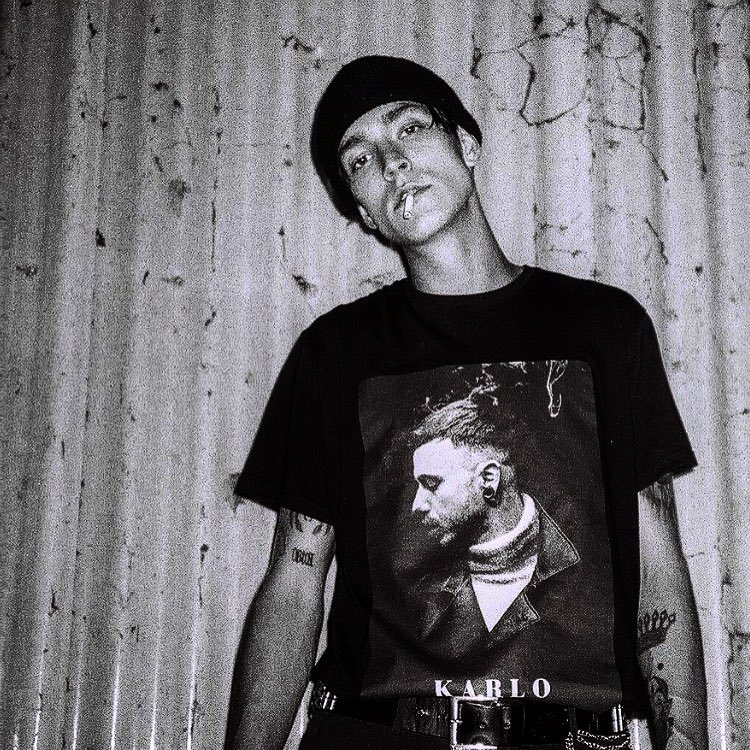

Nik Tendo

Nik Tendo
Dominik Citta (19. srpna 1993, Pardubice), známý jako Nik Tendo, je český rapper a člen labelu Milion+ Entertainment. Patří mezi nejvýraznější postavy současné české rapové a trapové scény.
Základní informace
- Rodné jméno: Dominik Citta
- Původ: Pardubice
- Žánry: rap, trap
- Aktivní roky: 2012 – současnost
- Label: Milion+ Entertainment
- Výška: 197 cm
Dětství a mládí
Narodil se v Pardubicích, kde také vyrůstal. Má staršího bratra a vystudoval gymnázium Mozartova. V mládí se věnoval basketbalu a před hudební kariérou pracoval jako číšník.
Začátky kariéry
Hudbě se začal věnovat kolem roku 2012, výrazněji se ale prosadil až v roce 2016 singlem Delfín. Jeho jméno Nik Tendo je přesmyčka slov „Ten Nikdo“.
Průlom a úspěch
Průlom přišel s alby 7 (2018) a především Fatamorgana (2019), které ovládlo české i slovenské hitparády. Hity jako Hvězdy, Na chvíli nebo 6:00 ráno ho vystřelily mezi top české rappery.
Restart & Lunazar
V roce 2020 vydal EP Restart a Lunazar, které přinesly number-one hity Není limit a 365247. Oba projekty se držely na vrcholu žebříčků.
Spolupráce
- dlouhodobá spolupráce s Yzomandiasem (duo Double Trouble)
- projekty s Viktorem Sheenem
- album PATTERN s producentem NobodyListen
- EP HRA1 s Benem Cristovaem
Současnost
Mezi jeho nejnovější projekty patří album V gastru nejsou lidi (2024) a GoldKiid (2025), které navazuje na jeho starší tvorbu a potvrzuje jeho silnou pozici na scéně.
Styl a image
- temná atmosféra a tvrdé beaty
- osobní a emoční texty
- výrazná vizuální estetika
- silná fanouškovská základna
Zajímavosti
- většina alb debutovala na 1. místě hitparád
- patří mezi nejstreamovanější české rappery
- výrazná postava labelu Milion+
Diskografie
- GOLDKID: ULTIMATE SECTION · TODO
- GoldKiid · 2025
- v gastru nejsou lidi (chef's deluxe) · TODO
- v gastru nejsou lidi · 2024
- *PATTERN* · TODO
- Krtek Forever · TODO
- Kruhy & Vlny (217 Twins Edition) · TODO
- Kruhy & Vlny · TODO
- NO PHONE: ŽIVĚ · TODO
- Jsem v pohodě, sem v prdeli. · TODO
- LUNAZAR · 2020
- RESTART · 2020
- FATAMORGANA · 2019
- KRTEK MONEY LIFE · TODO
- 7 · 2018
- Gold Cigo · TODO
- GoldKid · TODO